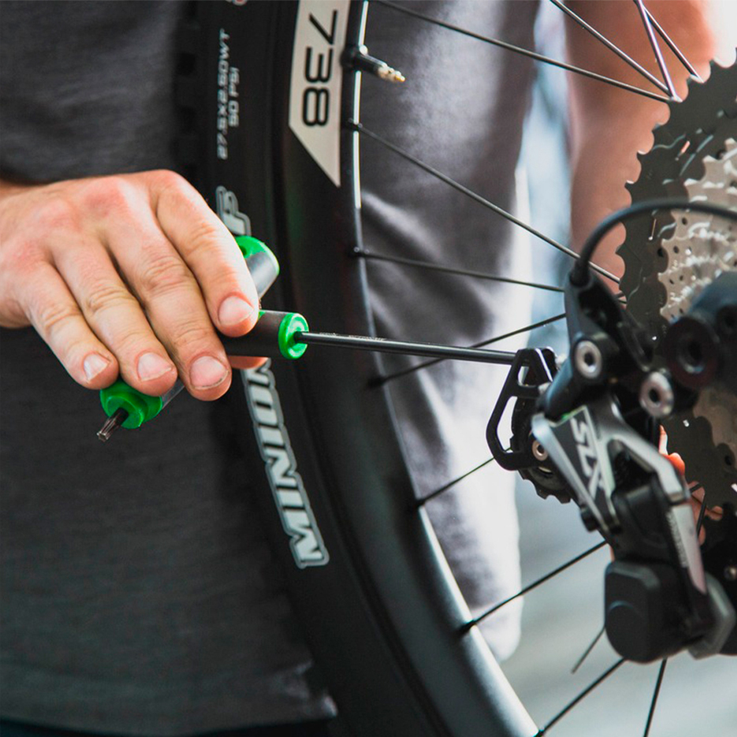

Nossa Bike é nossa paixão, cuidamos dela com todo empenho. Mas ela é um equipamento mecânico, que pode, sem mais nem menos, falhar em algum momento. Ela precisa de cuidados especiais e manutenção preventiva. O bom é quando acontece perto de casa, mas
e se você ficar na mão longe de casa? E o pior é quando a bike já te dá sinais que precisa de revisão e você vai procrastinando e não faz nada. Daí, no momento que isso acontecer não adianta chutar a bike dizendo que ela não presta.
A responsabilidade disso é só sua.